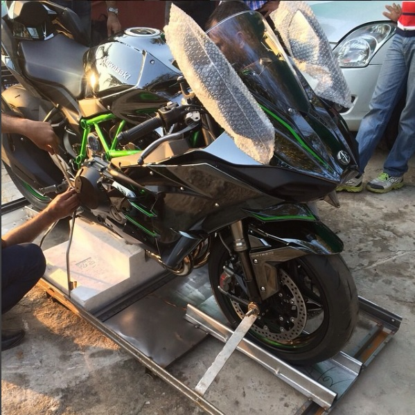

MS Dhoni is a big motorcycle lover with his garage filled with exotics, vintage motorcycles and some superbikes as well. At the same time, he also has an amazing car collection. MS Dhoni always had a knack for motorcycles. After he earned some money from a cricket match, he bought a second-hand Yamaha RX100. Gradually, he bought more and more motorcycles. Now the count of his motorcycles crosses 100. Bikes like Kawasaki Ninja H2, Confederate Hellcat, BSA and a Norton Vintage bike are some of the few highlights of his garage. bikes and cars of MS Dhoni His car collection is also equally unique with classics such as Hummer H2, GMC Sierra, the first-generation Mitsubishi Pajero and a humble, specially made, open 2-door Scorpio.
We start off the list of MS Dhoni Cars and Bikes with an exotic Kawasaki Ninja H2. The numbers associated with this superbike are pretty intense. It gets a 998 cc 4 cylinder engine that benefits from supercharging. Maximum power output stands at 200 hp @ 11000 rpm and peak torque at 134 Nm @ 10500 rpm. Dhoni brought the bike earlier this year. The 2017 model Kawasaki Ninja H2 is on sale in India for Rs. 33.30 lakh (ex-showroom Delhi). 
This is probably one of the rarest bikes in the world as only 150 exist. MS Dhoni is the only South East Asian customer to own one of these crazy machines. Other owners include A-Listers such as Brad Pitt, Tom Cruise, David Beckham and Ryan Reynolds. The Hellcat draws power from a 2.2 L V-Twin that churns out 132 hp and 200 Nm. Dhoni took his bike for a spin at the Buddh International Circuit too.
MS Dhoni�s love for bike bikes continues with the Kawasaki Ninja ZX-14R. It gets a 4- cylinder 1441 cc engine that puts out 197.39 bhp of maximum power. It boasts a top speed of 335 km/h! The bike is available in India at Rs. 16.80 lakh (ex-showroom Delhi). The ZX-14R is the saner of the two Ninjas Mahendra Singh Dhoni owns.